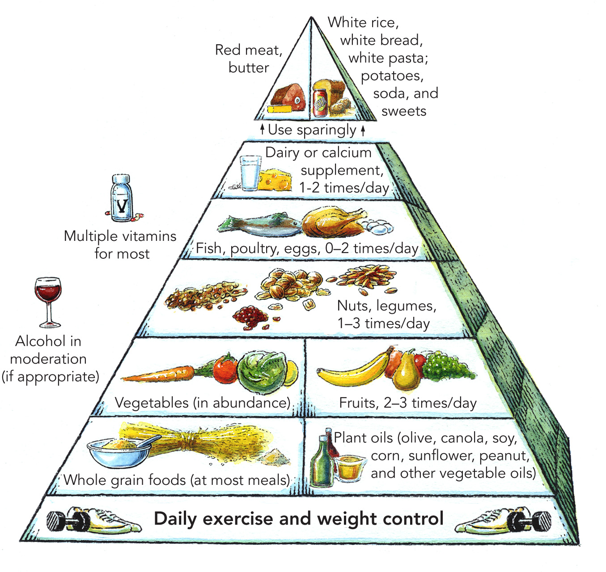
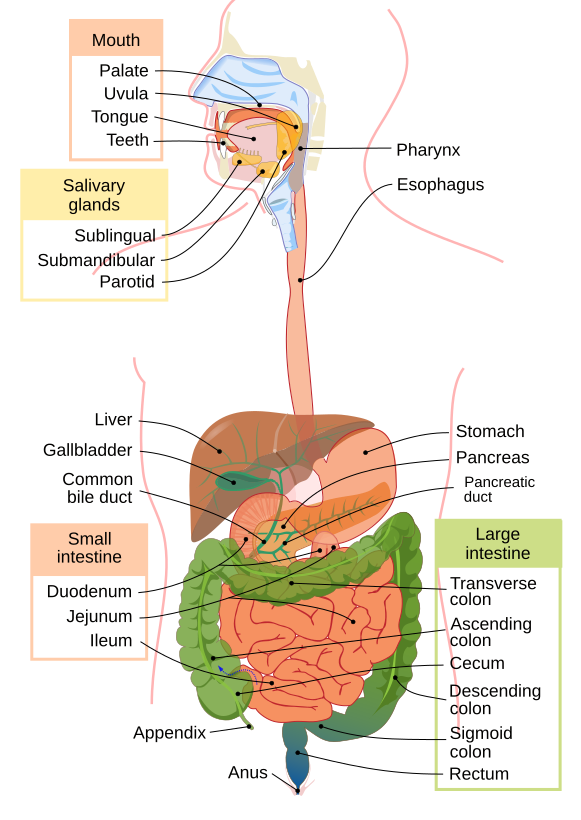

Calculate your macros, understand metabolism, compare foods


4 kcal/gram — builds and repairs muscle tissue, enzymes, hormones, immune cells.
Sources: chicken, eggs, fish, greek yogurt, legumes, whey
Deficiency: muscle wasting, edema, immune failure
4 kcal/gram — primary fuel for brain and high-intensity exercise. Stored as glycogen (liver/muscle).
Sources: rice, oats, bread, fruit, potatoes, legumes
Deficiency: fatigue, brain fog, poor workout performance
9 kcal/gram — hormone production, fat-soluble vitamins (ADEK), cell membranes, long-duration fuel.
Sources: olive oil, avocado, nuts, fatty fish, eggs
Deficiency: hormonal issues, dry skin, vitamin deficiency
In fed state, glucose from carbohydrates enters glycolysis, producing pyruvate → acetyl-CoA → Krebs cycle → 36 ATP per glucose. Most efficient energy pathway.
| Food | Calories | Protein (g) | Carbs (g) | Fat (g) | Fiber (g) |
|---|